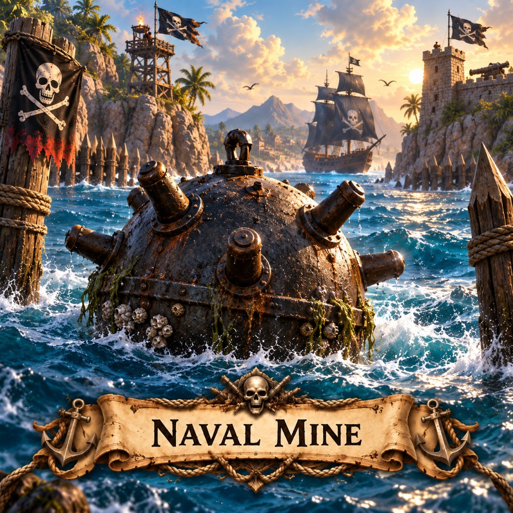

Naval Mines in Marauder's Sea: hidden sea mines unlocked at Armory 4. Placement, arming, and who they hit.

The honest weapon of a dishonest harbor. You do not see it until the hull does.
Place from water, not the land menu. Unlock at Armory 4. Arms after 10 seconds. Hits enemy Warships, Marauders, and transports. You and teammates see them; enemies do not. Max 3. Trade ships ignore them. First $250,000, then $500,000.
Back to the building list or pick a map like X Marks the Spot and play this mobile strategy game in the browser.